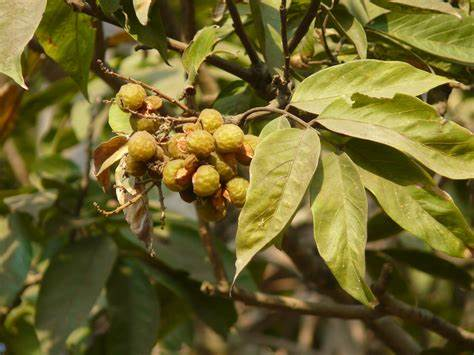

Basonym of Drug
Arishtaka
Main Synonym
- Mangalya
- Krishnavarna
- Arthasadhana
- Raktabija
- Pittafena
- Fenil
- Garbhapatana
Regional Name
- Bengali: Rithegach
- Gujarati: Agathiyo
- Hindi: Ritha
- Kannada: Kukute kayi
- Tamil: Ponnan kottay
- Telugu: Kunkudu
- English: Soap nut tree
Botanical Name
Sapindus mukorossi Gaertn / Sapindus trifoliate/ Sapindus laurifolia
Family
Sapindaceae
Classification (Gana)
Bhavprakash nighantu mentioned aristaka in VatadiVarga.
Kaiyadeva nighantu mentioned on aushadhi varga.
External Morphology
15-20 meter medium tree
Useful Parts
Important Phytoconstituent
Saponins, oleonic acid, saapindoside, trifoliosite
Rasa Panchak
- Rasa: Tikta, katu
- Guna: Laghu, snigdha, tikshana
- Virya: Ushna
- Vipaka: Katu
Action
Tridoshashaman
Therapeutic Indication
- Garbhapatana (used for abortion)
- Grahani vikaras (in irritable bowel syndrome)
- Vishahara (for poison treatment)
- Vamaka (used in treatment by vomiting)
- Kaphaghana (used in Kapha humor diseases)
Therapeutic Uses
- Swasa-kasa - Nut juice is useful as a vomiting agent for the common cold, and cough.
- Ahiphena visha - In opium poisoning, it is useful as a vomiting agent.
- Honey-bee bite - External application of water of aristaka is useful.
Dose
- As vomiting agent decoction - 4 to 8 ml
- Decoction - 0.5 to 1 gm
Formulations
Adverse Effect
Not Known
Remedial Measure
Not required